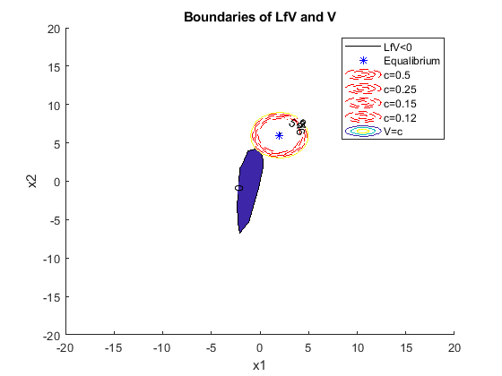

clear; clc;
Q = eye(2)
K = 0.08;
syms x1 x2
u = K*x2
xdot = [x1 - x1^3 + x2; 3*x1 - x2 + u];
xe = [2; 6]
A = double(subs(jacobian(xdot,[x1;x2]),{x1,x2},{xe(1),xe(2)}))
P = eye(2);
x = [x1; x2];
Vsyms = transpose(x - xe)*P*(x - xe);
LfVsyms = diff(Vsyms,x1)*xdot(1) + diff(Vsyms,x2)* xdot(2);
x1n = linspace(-20,20,50);
x2n = linspace(-20,20,50);
[X,Y] = meshgrid(x1n,x2n);
Vnum = double(subs(Vsyms, {x1,x2}, {X,Y}));
LfVnum = double(subs(LfVsyms, {x1,x2},{X,Y}));
hold on
contourf(X,Y,LfVnum,[0,0],'ShowText','on')
scatter(2,6,'*b')
contour(X,Y,Vnum, [0,5],'--r','ShowText','on')
contour(X,Y,Vnum, [0,6],'--r','ShowText','on')
contour(X,Y,Vnum, [0,7],'--r','ShowText','on')
contour(X,Y,Vnum, [0,8],'--r','ShowText','on')
contour(X,Y,Vnum, [0,9],'ShowText','on')
hold off
legend('LfV<0','Equalibrium', 'c=0.5','c=0.25','c=0.15','c=0.12', 'V=c')
title('Boundaries of LfV and V')
xlabel('x1');
ylabel('x2');
c = 0.5;
Area = (pi*c)/sqrt(det(P))
Q =
1 0
0 1
u =
(2*x2)/25
xe =
2
6
A =
-11.0000 1.0000
3.0000 -0.9200
Area =
1.5708
